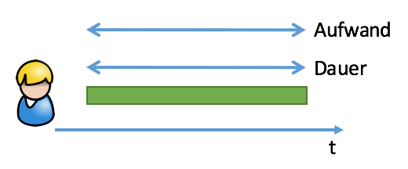
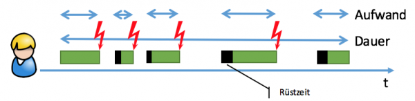
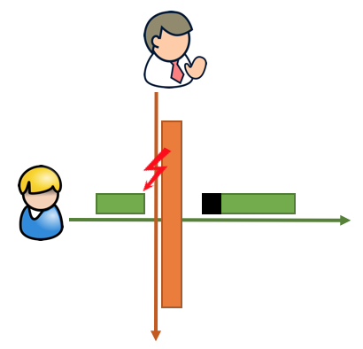
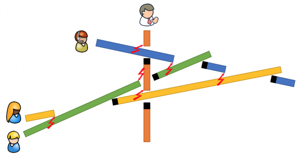

Unterbrechungen im Büro – Was tun?
Im Lean Digital Office geht die Arbeit flüssig von der Hand. Sobald eine Aufgabe begonnen wurde, wird sie zügig erledigt. Das erwartet ja auch jeder Auftraggeber. Wenn Sie am Supermarkt an der Kasse stehen, wenn Sie im Restaurant eine Bestellung aufgeben, wenn Sie die Putzhilfe engagieren, dann erwarten Sie, dass das, was zu erledigen ist, zügig, flott, flüssig erledigt wird. Warum sollte das im Büro oder bei Knowledge-Workern anders sein?
Das ist es auch nicht – und doch ist solch flüssige Aufgabenerledigung nicht die Regel.
Der Grund dafür ist nicht die Andersartigkeit von Aufgaben im Office. Kassieren, Kochen, Putzen sind „Handarbeit“, Büroarbeit ist oft Kopfarbeit. Kassieren, Kochen, Putzen sind sich stark wiederholende Tätigkeiten, Büroarbeit nimmt immer wieder neue Formen an. Solche Andersartigkeit hat natürlich einen Effekt. Sie ist ohne Zweifel bei der Organisation von Büroarbeit zu bedenken. Dennoch lassen sich Aufgaben im Office ganz grundsätzlich genauso flüssig erledigen wie Kassieren, Kochen, Putzen.
Aber warum gerät die Arbeit im Büro immer wieder ins Stocken?
Aus einem ganz einfachen Grund: Unterbrechungen!
Die Geißel flüssigen Arbeitens
Sie arbeiten sich gerade durch eine Liste von Reklamationen – da kommt jemand herein und verwickelt Sie in ein Gespräch über die Firmenfeier nächste Woche. Dadurch werden Sie erst später fertig mit der Liste und der Gesamtaufwand steigt, weil Sie sich nach der Unterbrechung erst wieder in die Aufgabe hineinfinden müssen.
Oder Sie bereiten gerade eine Präsentation vor – da ruft ein Techniker an, der eine Frage zum Projekt hat. Sie werden mit der Präsentationsvorbereitung dadurch erst später fertig und der Gesamtaufwand steigt durch zusätzliche „Rüstzeit“ für Ihren Kopf.
Sie planen gerade zusammen mit einigen Kollegen ein gemeinsames Projekt – da kommt ein Vorgesetzter herein und ruft zwei der Kollegen zu einem Gespräch mit der Technik heraus. Die Planungsbesprechung wird dadurch erst später beendet und macht einen größeren Gesamtaufwand, weil nach Rückkehr der Kollegen erst wieder die „mentalen Modelle“ in allen Beteiligten aufgebaut werden müssen. Mit einem „Wo waren wir stehengeblieben?“ ist ein Wiedereinstieg oft nicht einfach und schnell möglich.
Unterbrechungen im Büro sind der Feind Nr. 1 für die effiziente Erledigung von Aufgaben.
Unterbrechungen sind das Gegenteil von lean, denn sie führen zu:
- einer Abweichung von der eigentlichen Tätigkeit, mit der Sie eine Aufgabe voranbringen wollen.
- Verzögerungen, d.h. zu Warten auf das Ergebnis, nicht nur durch die Abweichung, sondern auch durch zusätzliche „Rüstzeiten“ nach den Unterbrechungen.
- Wiederholungen dessen, was schon einmal getan wurde, um wieder an den Punkt zu kommen, wo Sie vor der Unterbrechung schon waren („Rüstzeit“).
Abweichungen, Verzögerungen, Wiederholungen (engl. deviation, hesitation, repetition) sind die Symptome von Arbeit, die nicht schlank und flüssig, d.h. nicht lean ist.
Unterbrechungen führen zu Multitasking
Arbeit, die ohne Unterbrechung verläuft, sieht so aus:

Dauer und Aufwand sind gleich. Die sogenannte Durchlaufzeit ist identisch mit der Bearbeitungszeit.
Wie anders ist das Bild jedoch mit Unterbrechungen:

Dauer und Aufwand sind nun nicht mehr gleich. Der Aufwand ist um die zusätzlichen Rüst-/Verzögerungszeiten gestiegen und die Dauer ist um die Rüstzeiten und die Unterbrechungsdauern verlängert.
Das sind die typischen leicht sichtbaren Effekte von Multitasking. Multitasking findet immer dann statt, wenn Sie zwei oder mehr Aufgaben beginnen und versuchen, sie im Wechsel – oder von außen betrachtet: quasi gleichzeitig – zu erledigen.
Keine dieser Aufgaben wird dann früher erledigt als bei sequenzieller Erledigung, d.h. nacheinander gelagerter Bearbeitung. Alle Aufgaben haben dadurch einen höheren Aufwand. Und hinzu kommt noch eine Tendenz zu schlechterer Qualität, denn das Umschalten zwischen verschiedenen Aufgaben kostet geistige Kraft, die Ihnen bei der Konzentration auf eine gute Erledigung der einen Aufgabe fehlt. Das bedeutet früher oder später weitere Verschwendung durch Wiederholungen (hier: Nachbesserung).
Ursachen von Unterbrechungen
Unterbrechungen im Büro kommen im hiesigen Sinn von außen. Sie sind also nicht Teil der eigentlichen Tätigkeit. Dabei ist es egal, ob der Auslöser ein Kollege am Nebentisch, ein Kunde am Telefon oder der Chef in der Tür ist. In der Natur von Unterbrechungen liegt ihre Überraschung und zunächst einmal auch ihre Unabwendbarkeit.
Und warum unterbrechen andere Menschen Ihre Arbeit? Sie wollen die eigene Aufgabe flüssig erledigen!
Es ist also paradox: Flüssige Arbeit wird verhindert, weil flüssiges Arbeiten erreicht werden soll.
Allein, es handelt sich nicht um dieselbe Arbeit. Vielmehr werden unterschiedliche Ziele verfolgt, es besteht also ein Zielkonflikt.

Da, wo die Arbeit des anderen die Ihre kreuzt… da entsteht für Sie eine Unterbrechung im Büro. Die flüssige Arbeit des anderen bringt Ihre Arbeit ins Stocken.
Eine geradezu tragische Situation: denn angestrebtes Gutes bewirkt Schlechtes.
Aus der Sicht der Systemtheorie liegt eine lokale Optimierung vor – auf Kosten eines globalen Optimums. Einer bekommt seine Aufgabe flüssig erledigt, andere nicht; sie leiden an Unterbrechungen.
Oder genauer: Nur sehr unwahrscheinlich bekommt einer seine Aufgabe flüssig erledigt. Denn das „Recht auf Unterbrechung“ nimmt sich gewöhnlich nicht nur einer in einer Organisation heraus. Vielmehr sehe ich meist eine „Unterbrechungskultur“ am Werk. In der ist es völlig normal, dass jeder jeden bei akut auftretendem Bedarf unterbrechen darf.

Kaum jemand in den Büros, in denen ich meine Arbeit zur Transformation in ein Lean Digital Office beginne, kann sich von diesem Verhalten ausnehmen. Alle leiden unter den negativen Effekten von Unterbrechungen und Multitasking – und gleichzeitig tragen alle dazu bei. Weil es so normal ist, vor allem auf die eigenen Aufgaben zu schauen, deren Erledigung voran kommen soll. Daraufhin wird Optimierung von jedem Einzelnen betrieben; das Ganze hingegen ist wenig im Blick und so kommt es zu den globalen schmerzhaften Symptomen: Unzuverlässigkeit, Qualitätsmängel, Druck, Stress.
Mit Unterbrechungen im Büro umgehen
Das Problem der „Unterbrechungskultur“ ist groß und tiefsitzend. Es zu lösen, bedarf Maßnahmen auf verschiedenen Ebenen und aus unterschiedlichen Richtungen. Deshalb möchte ich mich hier zunächst darauf beschränken, Ihnen persönlich einige Tipps zu geben, wie Sie mit Unterbrechungen durch andere umgehen können:
- Am Anfang steht Bewusstheit. Seien Sie sich bewusst, welch kontraproduktiven Effekt Unterbrechungen haben. Nehmen Sie sie nicht auf die leichter Schulter. Wappnen Sie sich. Der „Unterbrechungsblitz“ kann immer und überall einschlagen. Richten Sie unterbrechungsfreie Räume ein, physische wie zeitliche. Je dringender eine Aufgabe ist, desto geschützter vor Unterbrechungen sollte Ihre Arbeit daran verlaufen; aber auch Wichtiges muss geschützt werden.
- Verabreden Sie nach innen und außen „Sprechzeiten“, d.h. Zeiten, in denen Unterbrechungen für Sie akzeptabel sind. Außerhalb dieser Zeiten sollte es dann nicht mehr zu Unterbrechungen kommen; das sind Ihre „Stillarbeitszeiten“. Sie können sich zumindest für die Dauer der geschützten Zeit auf je eine Aufgabe konzentrieren, um diese maximal zügig zu erledigen. Natürlich sequenziell und nicht durch selbstverursachtes Multitasking verlangsamt 😉
- Wenn es widererwarten doch zu einer Unterbrechung in Ihrer „Stillarbeitszeit“ kommt, antworten Sie auf die damit im Raum stehende Bitte um Ihre Aufmerksamkeit knapp mit einem freundlichen, aber entschiedenen „Nein, aber…“ Das Nein zeigt klar an, dass Sie nicht bereit sind, in diesem Moment dem Störer weitere Aufmerksamkeit nach dessen Willen zu schenken. Das Nein zieht eine Grenze. Über das aber jedoch bleiben Sie mit dem Störer verbunden. Sie öffnen Ihre Grenze und machen ein Angebot. Beispiel:
Störer: „Hast du einen Moment für mich?“
Unterbrochener: „Nein, aber in einer Stunde komme ich vorbei und dann können wir reden.“ - Stellen Sie Unterbrechungsquellen in den „Stillarbeitszeiten“ konsequent ab – und am besten auch darüber hinaus. Lassen Sie sich nicht von Benachrichtigungen aller Art terrorisieren: Das Telefon leise stellen; der Anrufbeantwortet widmet sich gerne jedem Störer. Email, Facebook, Twitter, Instagram, SMS, Whatsapp und sonstige Dienste, die Benachrichtigungen über neue Nachrichten versenden, abstellen.
- Falls Sie nicht über Stunden ohne Benachrichtigungen auskommen, takten Sie Ihre ununterbrochene „Stillarbeitszeit“ selbst ganz bewusst. Konzentrieren Sie sich z.B. für jeweils 45 Minuten voll auf eine Aufgabe – und checken danach „zur Erholung“ Ihre Benachrichtigungen.
Fazit
Der Kampf gegen den Produktivitätskiller Unterbrechungen im Büro beginnt bei Ihnen. Warten Sie nicht darauf, dass jemand anderes Ihnen Ihre Aufgabenerledigung schlanker macht. Der Klempner, der die Verstopfung in Ihrem Arbeitsfluss behebt, sind zuerst Sie selbst. Behalten Sie die Hoheit über Ihre Zeit und Aufmerksamkeit.
Beginnen Sie jetzt mit einem eigenen ersten Schritt zum Lean Digital Office. Wie Sie sehen, sind meine Tipps sogar sehr analog 😉 Es braucht nur ein wenig kollegiale Abstimmug und persönliche Disziplin.
Ich bin gewiss, wenn Sie damit anfangen, Unterbrechungen als das Übel zu identifizieren und in dieser Weise anzugehen, dann wird das positive Kreise in Ihrem Office ziehen. Denn es geht um nichts weniger, als zu mehr Entspannung bei gleichzeitig höherer Verlässlichkeit zu kommen. Das ist flüssige Arbeit, wie ich sie mir vorstelle.
Weitere Artikel

Regeln für KI im Office
ChatGPT & Co haben sich schnell in die Herzen und Alltag von vielen Menschen im Berufs- und Privatleben gespielt. Diese neuen Werkzeuge eröffnen uns viele Chancen, nicht nur effizienter zu werden, sondern auch kreativer. Aber …

KI als Copilot für die Assistenz
KI in Form von ChatGPT & Co sind hervorragende neue Werkzeuge im Office-Alltag, um produktiver und ja, auch kreativer, zu werden. Neugier statt Angst ist angezeigt im Umgang mit diesen Werkzeugen, die wie andere Werkzeuge auch …